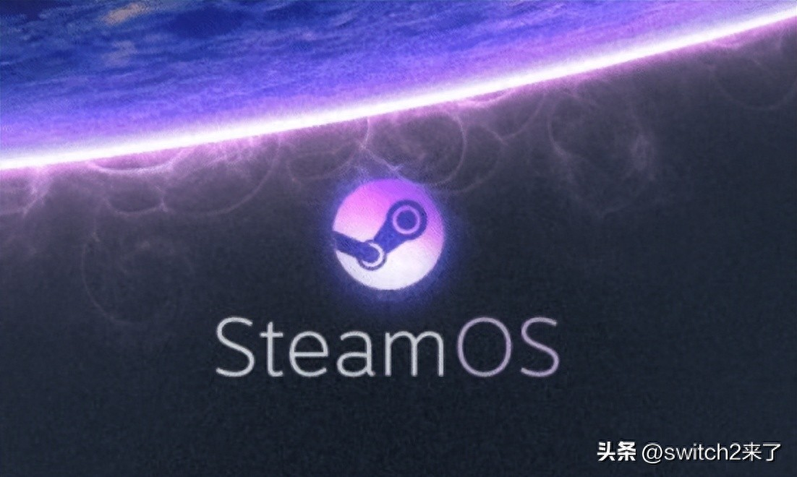
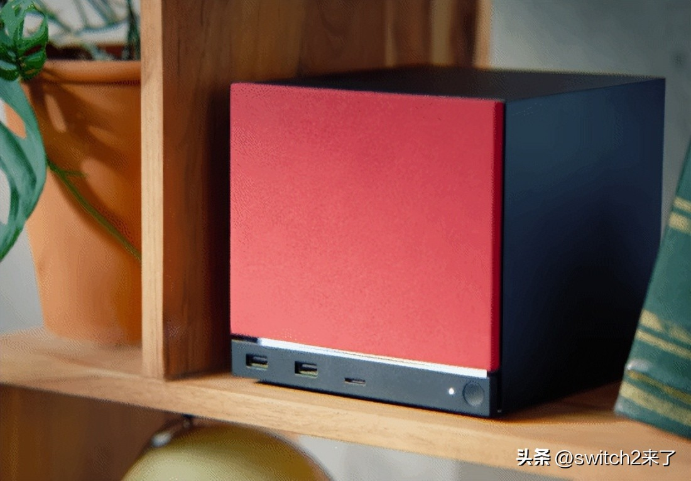
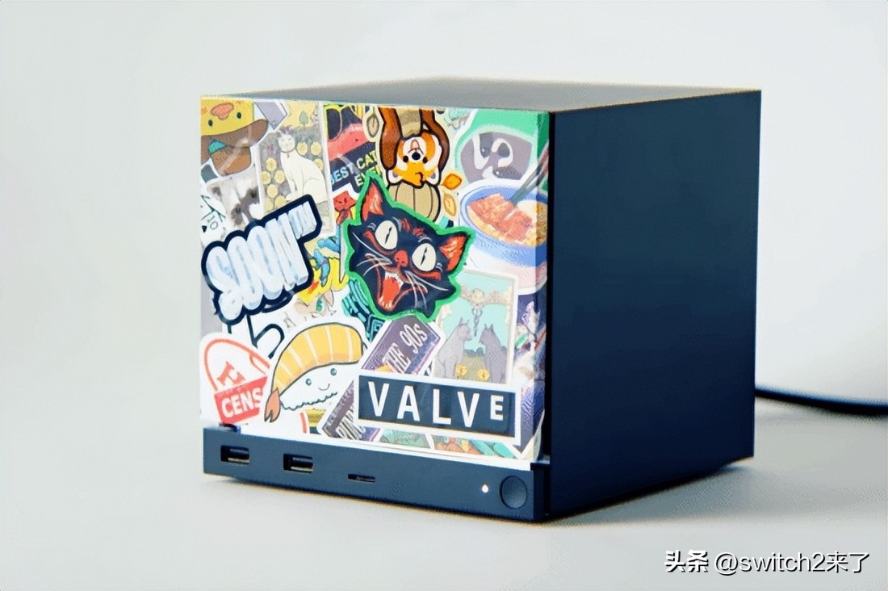

SteamOS全面开放！任何PC都能安装

Valve 今天（6月24日）放出了 SteamOS 3.8 的安装镜像——镜像约 10GB，官网已可免费下载。这回真的谁都能装，不用买 Steam Deck，也不用等官方整机。
SteamOS 最早是 2013 年公布的，当时 Valve 想做一台跑 Linux 的客厅游戏机，后来 Steam Machine 项目没成，慢慢就没什么人提了。直到 2022 年 Steam Deck 掌机卖火了，这套系统才跟着又热起来。

我自己算是盯着这项目比较久的那种玩家。当年那台客厅小盒子我买了，怎么说呢，想法确实好，但体验一言难尽。后来 Steam Deck 底座模式接电视其实已经很接近当年的设想了，可惜掌机性能就那么回事，跑 4K 还是有些吃力。
这次 3.8 放开安装限制，说白了就是你想用啥硬件就用啥硬件，CPU、显卡、内存全自己定。装好之后开机就是手柄操作的大屏界面，跟游戏主机几乎一样。

不过有几个坑得先说清楚。
显卡兼容方面，目前官方只明确支持 AMD，NVIDIA 和 Intel 都要等。Valve 说在跟 NVIDIA 合作推进，但按他们的口风，今年内大概率没戏。所以现在要动手的话，最省事的方案是组一台全 AMD 平台的机器。
安装过程也谈不上“一键搞定”。用的还是 Steam Deck 恢复镜像那套流程，写盘的时候会格掉整块硬盘，不支持双系统。等于说这台机器一旦装了 SteamOS，就变成纯游戏机了。有闲置 PC 的玩家无所谓，但只有一台主力机的话，装之前一定要把数据备份好。别问我怎么知道的，总之先备份就对了。
装好后的系统，说白了就是个游戏启动器——开机进大屏模式，库里的游戏一列排开，手柄一按就开玩。日常办公、浏览网页这些就别指望了，它本质上还是 Linux 底层，没预装桌面环境，想切出来查个攻略都得靠手机。
那值不值得折腾？官方 Steam Machine 起步就上千美元，自己攒一台同级配置的 PC 价格差不太多。但 DIY 的好处向来不是省钱，是灵活——预算少就先上一块入门 APU，以后显卡不够用了单独换一块就行，不用整台机器一起扔。比如锐龙 5 7600 配 RX 7600，整机下来 4000 元人民币左右就能入门，够跑 1080p 多数 3A 大作；手头宽裕的话 CPU 换成锐龙 7 或者显卡拉到 RX 7900 GRE，4K 也能稳一稳。这个自由度官方整机给不了。
先聊到这儿吧，我也刚装完，等我玩两天再补实测。有用过的朋友评论区说说体验，有什么坑也欢迎提个醒。
关于我们
📱 公众号名称：三天笔记
✍️ 作者：曾三天
扫码关注公众号，获取每日最新资讯

商务合作与版权
商务合作 / 内容投稿 / 品牌推广
请关注公众号「三天笔记」后台留言联系
版权声明：本文由作者整理，转载需注明出处。